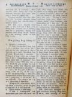
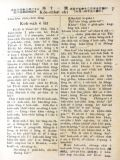
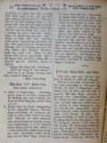

Languages
台文
｜
中文
｜
日本語
｜
English
字體
小
｜
中
｜
大
首頁
/
白話字數位典藏
白話字數位典藏全文檢索
查詢模式
選擇年代
清國時代(1885-1895)
日本時代(1895-1945)
戰後(1945-1969)
1885-1895
1896-1905
1906-1915
1916-1925
1926-1935
1936-1945
1946-1955
1956-1965
1966-1969
1970-1980
1980-1990
1990-2000
2000-2010
2010-
選擇文類
詩
散文
小說
戲劇
傳記
選擇作者
陳清忠
陳清義
編輯部
柯設偕
吳天命
明有德
偕叡廉
周天來
劉華義
王守勇
林茂生
陳添旺
王占魁
柯維思
賴仁聲
陳瓊琚
雪峰逸嵐
吳清鎰
郭水龍
蕭樂善
許水露
葉金木
陳金然
章王由
廖得
鄭連坤
楊士養
潘道榮
梁秀德
劉約翰
周淑慧
高金聲
林燕臣
黃六點
蔡愛義
許有才
主筆
巴克禮
陳鳩水
郭朝成
張基全
陳明清
陳能通
拾穗生
顏振聲
卓恆利
傳道局
胡文池
劉主安
鄭兒玉
蔡安定
陳復生
編輯人
張宏昌
鄭連德
李霖樹
江天順
鄭錦榮
Google Search
Yahoo Search
全部
刊名
標題
標題(教羅)
全文
全文(教羅)
作者
第99頁，共108頁(共2,148筆資料) 0.68957591056824sec
1
...
97
98
99
100
101
...
108
To Page
GO
文字列表
圖文列表
排序
日期
文類
刊名
作者
影像
[1926-12 芥菜子 文類-散文 作者-陳清忠/Tân Chheng-tiong ]
(4)
世界教化的使命 [ Sè-kài kàu-hoà ê sú-bēng ]
世界教化的使命。 若讀馬太二十八章最後的記事，就通看著復活的主佇加利利湖邊的一个小山頂，親身出現予伊的學生看，紲將世界教化的大命予--in。 耶穌傳命令的山，無tú-tú知是啥物山，kiám-chhái是san-siōng說教的山；保羅佇哥林多前書第十五章六節所講「閣一擺出現予五百外的兄弟siâng-時看見」，無定著是siâng這个時。 抹大拉的馬利亞佮別的馬利亞佇墓前看見主的時，主講，「莫得驚，」去報我的兄弟，kah in去加利利，佇遐欲看見我。」kiám-chhái佇加利利，有比驢太較濟共鳴者佇teh 的因端。除去猶太以外十一个學生攏轉去佇遐見主。 有人講主的復活，毋是一般客觀的...

[1926-12 芥菜子 文類-散文 作者-蔡安定/Chhoà An-tēng]
(2)
信仰佮行為 [ Sìn-gióng kap hêng-uî ]
信仰佮行為 1、 無言的感化。 有一个無神論的人佮ヘネロンsaⁿ-kap蹛三日久，伊本身無欲承認有這个真神，所以伊想伊的確袂變做基督教的信者。總是佇佮伊做陣的中間，有予伊的人款佮信仰拍著伊的心肝。後來伊才講「若閣蹛佇遮較久，我雖然無teh希望，毋kú袂免得著變做基督教的信者。」 ヘネロン無用言詞來苦勸伊著來信，也無佮伊議論信仰上的問題，總是伊家己驚了著放sak伊平生的無神論來信真神。這就是對ヘネロン恬恬的感化。 講話來傳傳道理，的確是要緊，毋kú無言的感化也有大氣力。 2、 親切的感動。 有一个勞動者teh拖車peh上kiā，因為貨物真重，所以才袂照所愛通peh上去。...

[1926-12 芥菜子 文類-散文 作者-陳清忠/Tân Chheng-tiong ]
(3)
閣活的力 [ Koh-oa̍h ê la̍t ]
閣活的力 保羅有看見主，主有顯現伊本身予保羅看見。伊的先輩，溫厚的君主巴拿巴有紹介這个迫害者，loān-bō͘ 的人Tāi-sò͘的掃羅，現時叫做保羅，予眾使徒，講伊佇路中有看見主，也主有佮伊講話。(使徒 9：27) 閣活的力的大，伊的強，若愛知，請看伊受召了後的一世人！這个力就是予對敵變做同僚，予怨恨變做疼的力lah！這个力就是予獅變做牛，予豺狼變做羊仔囝的力！ 若無閣活就無保羅，無保羅就無今旦日的異邦的教會；使徒行傳以下，新約的大部分也是無！！ 主的閣活，予萬人化做靈的閣活。肉體的閣活成做思想的閣活。－冷淡感情的閣活，化做強的意志的閣活。 I、閣活的力，予人信耶穌是上帝...
[1926-12 芥菜子 文類-散文 作者-雪峰逸嵐/Soat-hong Iat-lâm]
(2)
佇基隆一日久的感想 [ Tī Ki-liông chi̍t-ji̍t kú ê kám-sióng ]
佇基隆一日久的感想。 這pang鄙人為著研究電氣療法的事，對基隆欲來古浪嶼，因為船延期紲會通佇基隆過一个禮拜日。一日久有得著濟濟的教示佮感想；這若是別人遇著，是已經司空見慣；總是我毋是，反轉生出濟濟的感覺；雖然是平常事，iáu-kú若斟酌想，就有教示真濟。寫淡薄予親愛的兄姊saⁿ-kap參考： I、 吉野丸欲出航去日本的半點鐘前，人客佇船頂，親戚朋友佇岸頂teh送。送客買紙liâu 規khûn，hiat予人客，人客就對頭仔khiú--teh，規khûn hiat予送客。船 teh開的時，直直抽直直長。也有一个人客khiú 10外條，顯明有遐濟人來送；風 li-li，紙liâu p...
[1926-12 芥菜子 文類-散文 作者-郭水龍/Keh Chuí-lêng]
(1)
馬偕醫院近訊 [ Má-kai i-īⁿ kūn-sìn ]
馬偕醫院近訊。 (紲接前號) 5、 入院的患者，－大人，囡仔攏有衫褲通予in穿，這真利便，病人毋免另外倩人洗衫。 6、 患者若較傷重毋予人去探伊。台灣人這項毋慣勢，實在是真著。我的某佮囝這擺拄著破病真傷重好轉來，講，當傷重的時有遮的親人，會友去看伊，伊真艱苦，問東問西真艱苦真毋愛，真無愛聽人講話，無聽啥物聲，恬恬倒較看活，2人所講相同，到今我才知，代先我毋知，所以寫批叫親人來看伊；醫生毋准in 會面我偷 chhoā in 去看，今知是毋著。 病院對閣開以來，各位的教會受不止利益，就遮个傳教師有的也得著真大利益，也有不止濟對醫病轉去紲信道理，看這个病院對病人盡力醫治照顧，對上帝道理出...

[1926-12 芥菜子 文類-散文 作者-郭水龍/Keh Chuí-lêng]
(2)
坪林教會新聞 [ Pîⁿ-nâ kàu-hoē sin-bûn ]
坪林教會新聞。 我這pài 巡坪林教會比舊年有進步重倍。 坪林的所在是內山，道路真oán-sia̍p，佇台北佮宜蘭 12舖的中間，船車袂得到。小街市有百姓300外人，山崙的百姓真sòng-hiong，在地米食無夠著配蕃薯，倚靠蕃薯較濟。4年前有設講義所，到今不止好成績，百姓真欣慕道理，現時有20 戶趁道理人數94名。這pang大人15名愛領洗禮接納9名閣囡仔5名鄭生姆這家有10人來teh禮拜，鄭生本反對，今逐禮拜有刁工來禮拜。這pang伊的大新婦領洗禮，代先入天國向望後日全家30人會攏趁道理。 教會teh進步的因端有幾若項。 1、 有上帝的神跡teh幫贊。這人名林火對細漢h...
[1958-4 台灣教會公報 文類-散文 作者-陳復生/Tân Ho̍k-seng]
偉大的指導者，摩西 [ Uí-tāi ê chí-tō-chiá, mô͘-se ]
偉大的指導者，摩西 陳復生寫 1958年4月832期 6-7 (陳先生是台灣師範大學，美國普林斯頓神學院的出身。專攻舊約。舊年歸國，現時teh 教台灣神學院。這擺頭擺共咱賜告。向望此去會通 chia̍p-chia̍p得著伊的賜教) 當摩西大漢的時，有一日出去外位，看著伊的 同胞 teh受埃及人的窘逐，伊就拍死彼个埃及人。隔轉日閣出去的時，伊看見兩个希伯來人teh相爭，伊就欲共 in做公親 的時，反轉得著in 的反感，致到摩西本身著逃走(出2：11-15)。摩西做以色列百姓的拯救者佮指導者的生涯就是按呢開始。伊所拄著這兩日的中間所發生的事件也有象徵tek(sym...
[1958-4 台灣教會公報 文類-散文 作者-編輯人/Phian-chhip-jîn]
佮基督同死，同復活 [ Kap Ki-tok tâng sí, tâng koh-oa̍h ]
佮基督同死，同復活 編輯人寫 1958年4月832期 3 本號發行到佇各位讀者手中的時，諒必各位都攏同心虔誠teh 恭守受難週祈禱會的時；也祈禱會煞就有真快樂歡喜的復活節。當佇這个時節，咱應該著有甚物款精神上的準備，拍算大家攏有共通的期待愛得著適當的指示。 今受難週，復活節年年都 teh舉辦，這兩項也是使基督教會當成立的基楚tek 的事實。設使若無基督的 十字架佮伊的 受難，就基督教或者袂通產生，親像按呢，若無復活就基督教或者無基礎通存在。 既然是遮爾有重大意義的事項，咱gū著這个事實應該著有甚物款的態度？ 保羅講看萬物做糞埽，閣平素看做利益的，今攏看做損害，彼个...
[1958-9 台灣教會公報 文類-散文 作者--/-]
S.C.M的批 [ S.C.M. ê phoe ]
S.C.M. 的批 1958年9月837期 14-15 主內所敬疼的牧師長執平安！ 阮用真誠的心代表聖經大學的 S.C.M.全體會員對恁表示敬意，願主祝福恁大家。 主耶穌對咱講，「去普天下傳福音，」因為成千成萬的人渴望(向望)福音的論的。這个需要佇今日的 大專學校閣較迫切。為著予基督徒學生佇求學中也常常有聚集的機會，會得互相鼓勵，堅固信仰，閣進一步傳福音佇同學的中間，所以世界各地才有S.C.M.(Student Christian Movement)，就是學生基督教的組織。阮成大 S.C.M.佇台南神學院院長領導的下面，已經相當充實，堅強。但是阮閣較需要恁常常共阮...
[1958-10 台灣教會公報 文類-散文 作者-編輯人/Phian-chhip-jîn]
十月的一兩項事 [ Cha̍p goe̍h ê chi̍t nn̄g hāng sū ]
十月的一兩項事 編輯人寫 1958年10月838期 3-4 夏天過了，秋季的天懸閣涼爽。親愛的讀者毋知有想著幾項通saⁿ-kap做勉勵？筆者佇遮照例愛閣寫幾項。 一項：十月頭一禮拜是世界kong-tông聖餐日，這層事幾年來佇本報攏有teh 提倡。今各教會或者無攏照這个預定 teh舉行聖餐。總是大家若守聖餐的時，所得著濟濟的感想，中間的一項穩當是同心一意的事。聖餐的英語有時叫做(Holy communon)，這个意思，就是神聖的合一佮相通。小小的基督徒家庭著合一，小小一間教會著合一，小小的台灣教會也著合一，其實整個世界的教會都已經有真出力teh鼓舞，普世教聯運動...
[1958-10 台灣教會公報 文類-散文 作者-周天來/Chiu Thian-lâi]
學習怎樣來活 [ Ha̍k-si̍p cháiⁿ-iūⁿ lâi oa̍h ]
學習怎樣來活 美國雜誌「Moody」5月號所載 周天來 譯 1958年10月838期 14-15 △一个基督徒，設使伊若是屬神的人，緊慢會學習來看出上帝的手到佇一切的事件；也一切的事件佇上帝的手中。 △伊學習講佇通日的中間，直接代先佮上帝交陪，這款個人的祈禱佮奉事是真要緊，無人會通替伊做，也袂通予別項來替換。 △伊學習講伊袂通做逐項事，總是伊著發展伊家己屬靈的恩賜，閣著認明佇教會內為基督著做甚物工。 △伊學習講伊袂通知著怎樣來解答攏總的疑問，只有知為著逐款的境遇佮問題著chhē求對頂面來的智慧。 △伊學習講毋通看重家己傷過頭。伊是快錯...
[1958-10 台灣教會公報 文類-散文 作者-張宏昌/Tiuⁿ Hông-chhiong]
菲律賓考察報告書 [ Hui-li̍p-pin Khó-chhat pò-kò-su ]
菲律賓考察報告書 張宏昌 報 1958年10月838期 6-8 菲律賓是佇咱台灣的南爿，也是咱的厝邊。總是過去咱對菲律賓的智識真少，差不多攏毋知，總是我相信菲律賓人對台灣的認識也是真淺薄，這是我這pang到佇遐所感覺的一項事實，這kiám-chhái是因為過去菲律賓是屬佇美國所管轄，iā咱是才予日本管的關係，所以才互相無機會通相認識。 感謝上帝，這pang對菲律賓2教會聯盟(P.E.C.C.)青年部(Y.P.D.) 的好意聘請我到佇菲律賓，前後6禮拜久佇遐考察佮研究in 的青年事工佮教會以及一般的社會的款式。 4月22日早起10點，對台北起飛，...
[1958-10 台灣教會公報 文類-散文 作者-鄭連德/Tīⁿ Liân-tek]
想三項事 [ Siūⁿ saⁿ-hāng sū ]
想三項事 (去日本赴會的感想) 鄭連德 1958年10月838期 12-13 受派去日本東京參加國際會議，有得著真濟的見識佮鼓勵轉來台灣。這霎接著主筆的命令，愛寫幾句感想的話。 1、基督教教育的範圍 到今所teh想的基督教教育就是只有指起對囡仔抑是青少年的指導nā-tiāⁿ。彼个場所就是主日學。 總是這pang 的世界大會真致意佇這个根本問題。毋但 kan-ta佇教會，就是佇家庭、學校，抑是社會，見若人teh生活的所在就有需要基督教教育。 為著按呢，世界大會有分 5个部門來研究關係兒童部、青年部，家庭部、教育全盤部，以及信徒部的教育問題。 ...
[1958-10 台灣教會公報 文類-散文 作者-李霖樹/Lí Lîm-chhiū]
台灣基督教山地習藝所的近況 [ Tâi-oân Ki-tok-kàu 山地 Si̍p-gē-só͘ ê kūn-hóng ]
台灣基督教山地習藝所的近況 習藝所負責人：李霖樹 報 1958年10月838期 24-25 編者註：這个習藝所是咱的 pêng信徒所舉辦的機關，內容紹介佇遮，讀的人穩當欲知影in佇遐非常刻苦，閣收成真濟好的效果。 台灣基督教中壢山地習藝所對開辦以來，已經有6年，佇這中間得著上帝的看顧佮各位牧師以及兄弟姊妹的熱心贊助，業務得著漸漸發展。實在真感謝主的恩典佮各位的愛顧。本所的同工看見山地傳道機會真好，但是真欠傳道者，因為山地教會開設的歷史iáu-kú淺，教會的基礎猶未堅固，而且山地同胞無經濟的智識佮生活技能所以一般的生活水準猶真低，無力通負擔教會的經...
[1958-10 台灣教會公報 文類-散文 作者-江天順/Kang Thian-sūn]
泰爾雅教會的發展 [ Thài-ngá-ní kàu-hoē ê hoat-tián ]
泰爾雅教會的發展 江天順 (接前月號第 16面) 1958年10月838期 17-18 1、同心協力建設教會 今佇這个轟轟烈烈的中間，拜堂日日建設攏是在地取樑 ，用柴佮竹來起 的，工錢也是in家己奉獻的實在成做信仰的大家庭。太魯閣無久27 个鄉社攏有拜堂，抑是用in 的厝做聚會的所內。 In對佇真理的要求，聖經的研究都是親像枵，喙焦的款。佇這時平地的傳教者無一个無幫贊in ；信者也teh關心in 的教會。 最近有加拿大母會派一个德國籍的牧師Vicedom博士來調查山地教會。伊的報告中間有一句話講，「台灣教會攏無關心佇山地工作，」予我聽著...
[1958-10 台灣教會公報 文類-散文 作者--/-]
傳教師總會的報告 [ Thoân-kàu-su Chóng-hoē ê pò-kò ]
傳教師總會的報告 本報記者報 1958年10月838期 5-6 一年一擺的傳教師總會，今年有閣開佇花蓮市花蓮教會的所在。早時若講後山是受充軍的人才有到。佇後山只有會通看著懸山，大溪佮ka-lé(山地的兄弟)，總是現時是較無這款的觀念，iáu-kú對東部一般的認識毋是真明瞭。自對光復後山地的教會對花蓮市、屏東市，台東市附近直直發達了後，東部的傳教情形chia̍p-chia̍p傳報佇咱中間，為著愛促進全體傳教者對山地佮東部教會的知識，所以舊年佇埔里開傳總了後，就一致決定今年欲佇東部花蓮市的所在開會。總是到今年夏天風颱來si̍p-hek東部了後，山地 ，平地教會合...
[1958-11 台灣教會公報 文類-散文 作者-明有德/Bêng Iú-tek]
增補聖詩 50首介紹II [ Cheng-pó͘ Sèng-si 50 siú kài-siāu II ]
增補聖詩 50首介紹II 明有德 1958年11月839期 17-18 三十一面第 1首，「我若貪婪世間福氣。」這首詩是aⁿ Steele(1716-1778)所寫的。伊出世佇英國的 Hampshire，老爸是賣木材的人，也是無領薪水的浸禮教會的牧會者。aⁿ佇細漢的時陣就真愛做詩，真愛將所寫的詩念予厝裡的人聽。佇伊44 歲的時，有人將伊的作品編做一本聖詩有144首，34首是對「詩篇」翻譯出來的，30首詩家己做的普通詩。佇aⁿ 的生涯中有3、4項代誌予伊真艱苦。第一，就是身體無健康。另外有一過是因為訂婚後伊的未婚夫不幸受傷過身，予伊真痛心。佇家庭生活伊也過頭無閒。...
[1958-11 台灣教會公報 文類-散文 作者--/-]
請過來幫贊阮 [ Chhiáⁿ koè lâi pang-chān goán ]
請過來幫贊阮 參加台，菲，港，廈語佈道協進會的感想。 本報記者 1958年11月839期 9-10 自佇舊年咱的總幹事事經過香港的時，就佮香港的閩南人教會參詳，愛將南洋方面講廈門話的教會saⁿ-kap連絡，來促進傳教事業，對彼霎開始籌備到今年的10月，這个準備才實現通佇10月初 2 起，一禮拜久來開這个協進會。 今自佇今年總會有同意新竹中會的提案，為著欲記念總會的成立，來設海外宣道事業。Tú好總幹事春天閣去印尼會議，順路對新加坡，馬來亞方面的 華僑教會，向咱要求派牧師去遐幫贊in。這个事了後經過研究參詳，差不多到佇teh欲實現的時期lah。 ...
[1958-11 台灣教會公報 文類-散文 作者-鄭錦榮/Tīⁿ Gím-êng]
增補聖詩的介紹 [ Cheng-pó͘ Sèng-si ê kài-siāu ]
增補聖詩的介紹 I. 感恩佮讚美(50首詩 第 20面) 鄭錦榮 1958年11月839期 16-17 編者註： 本月第 4禮拜是感謝節日，鄭牧師所介紹這首詩，是感謝的詩，佇感謝節閣來學習這首詩，穩當有利益才著。 「Now thank we all o͘r God」(呵咾感謝上帝)。 作者Martin Rinkart(馬丁，林嘉德)，是德國人，路得會的牧師。1586年，出世佇Eilenberg(愛領堡)，老爸是做毯仔的師傅，家庭真散鄉。林嘉德苦學，畢業Leipzig大學神學院。伊是一个罕得看著的多才優秀的人物，特別佇作詩、音樂、戲劇有得著大的恩賜。...
[1958-11 台灣教會公報 文類-散文 作者-賴仁聲/Loā Jîn-seng]
論倍加運動 [ Lūn Poē-ka ūn-tōng ]
論倍加運動 (P.K.U.) 賴仁聲 1958年11月839期 6-8 主筆李牧師講本月欲出咱台灣宣教進展的特刊；叫我寫論P.K.U.的事，今我照所吩咐來寫幾句佇遮，來論起P.K.U.的過去，現在，佮將來的望展。 1、論P.K.U.的過去。 P.K.U.這个名對咱已經毋是新的名詞 lah，已經是咱一个真熟似的名詞。而且是咱眾人所關心，注意teh看的目標才著。總是為著事是遮爾 koan-tiōng，所以咱毋通有一刻久的疏忽。咱應該掠伊做新，又日新，日日新來記得才著。 (1) P.K.U.的起源佮意義。P.K.U.的起源是對A.D.1954...
第99頁，共108頁(共2,148筆資料)
1
...
97
98
99
100
101
...
108
To Page
GO
數位典藏國家型科技計劃
拓展台灣數位典藏計畫
版權所有 國立台灣師範大學 台灣文化及語言文學研究所©2008
10610 台北市和平東路一段162號│TEL 02-7734-5516│Fax 02-2358-2461
計劃簡介
典藏特色
執行架構
計畫典藏數位化流程
成員介紹
台灣白話字發展簡介
巴克禮牧師與《台灣教會公報》
廈門話字典-杜嘉德
白話字教學-打馬字
中國南方白話字發展
台灣基督教長老教會簡表
台灣基督教長老教會教會歷史委員會
《北部台灣基督長老教會教會ê歷史》
關於陳清忠
白話字文學：台灣文學的早春